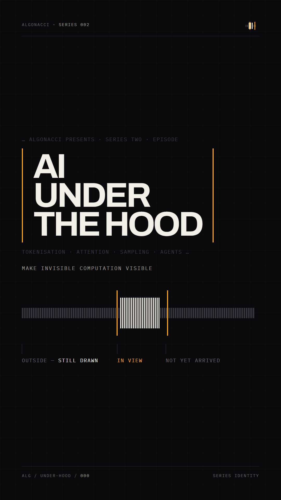
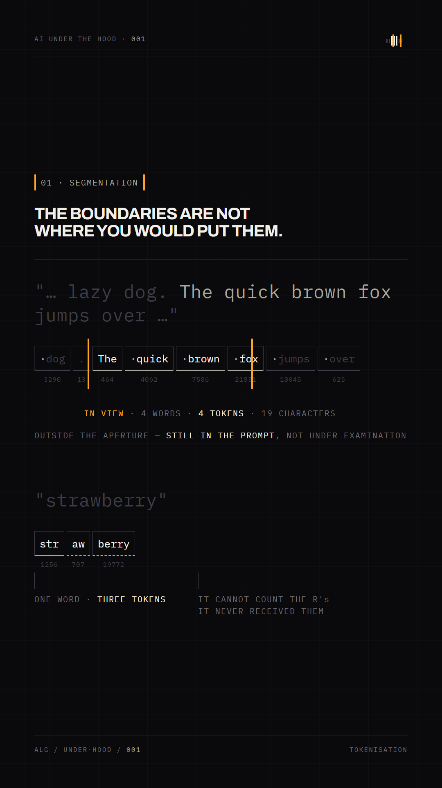
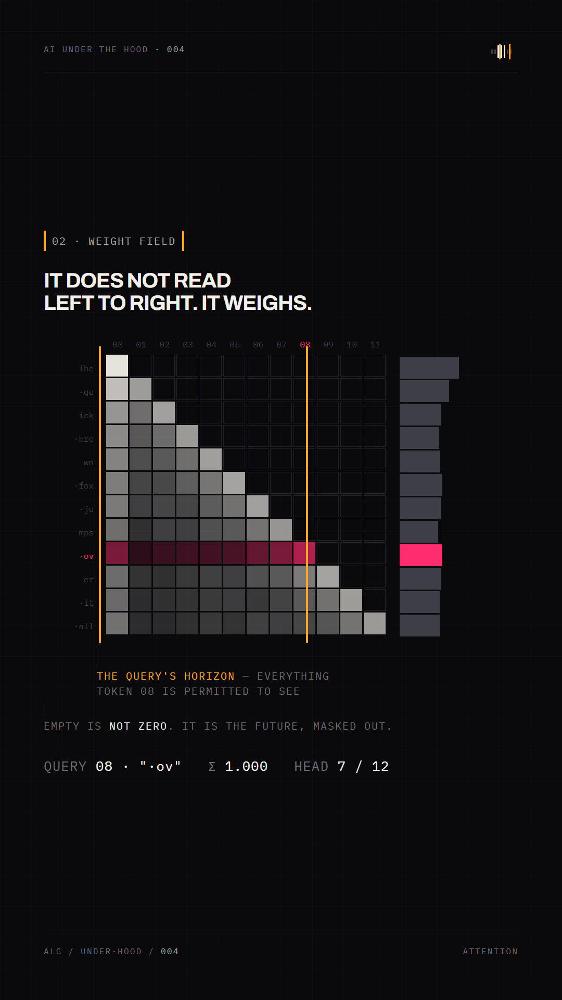
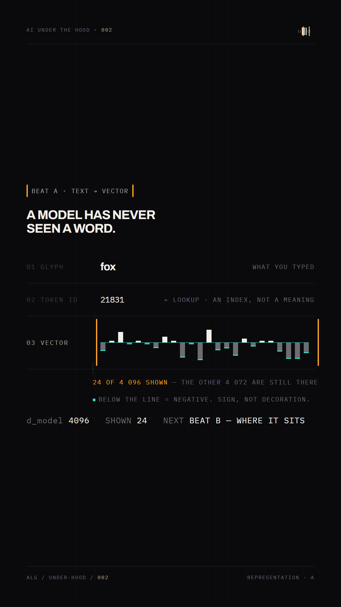
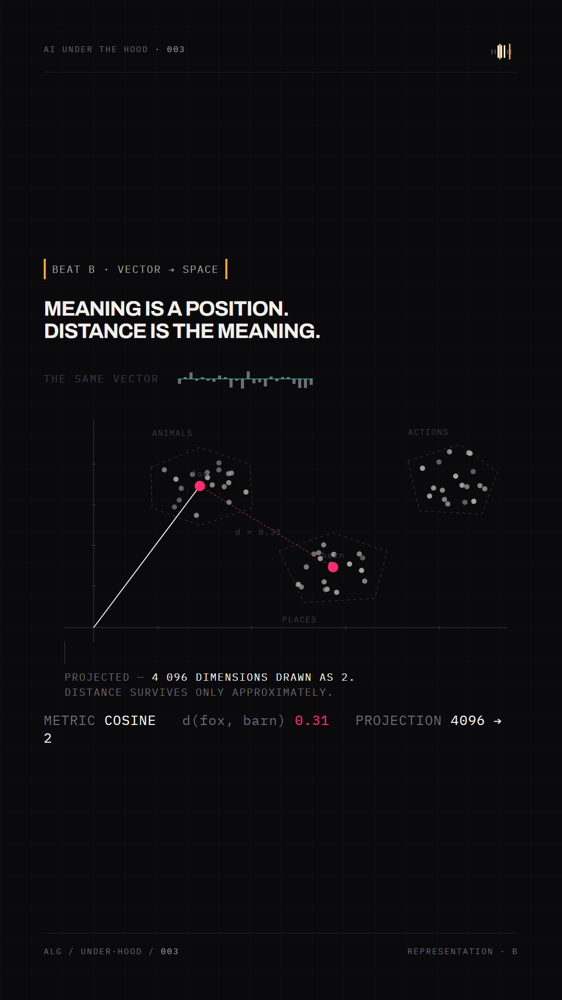
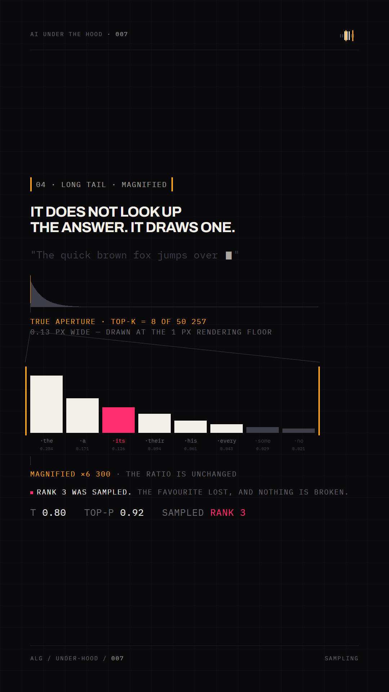
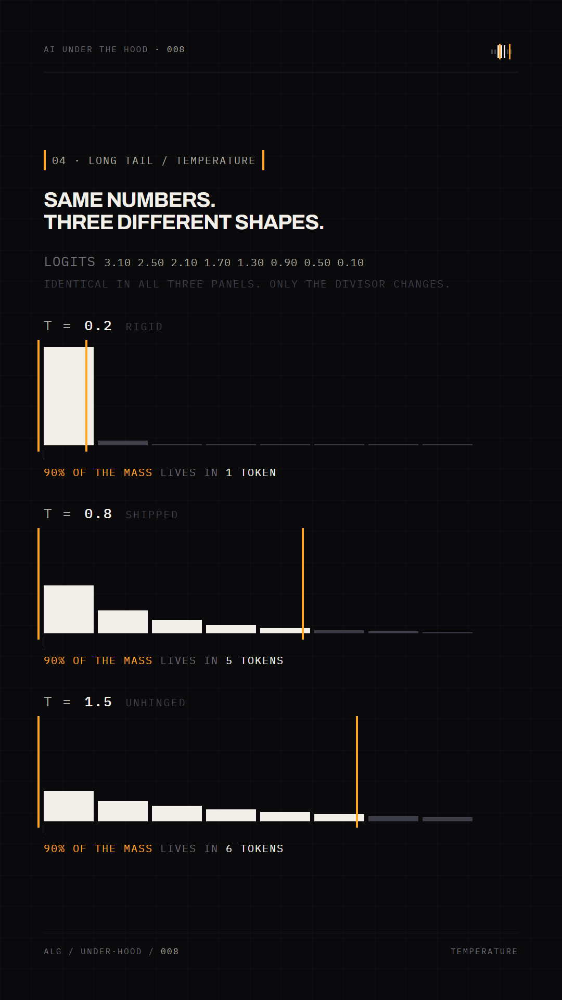
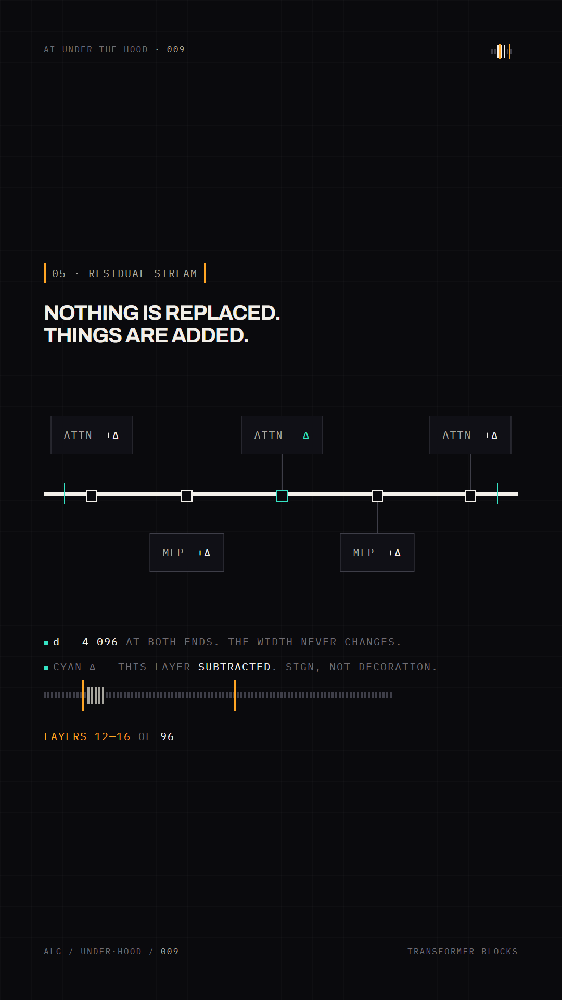
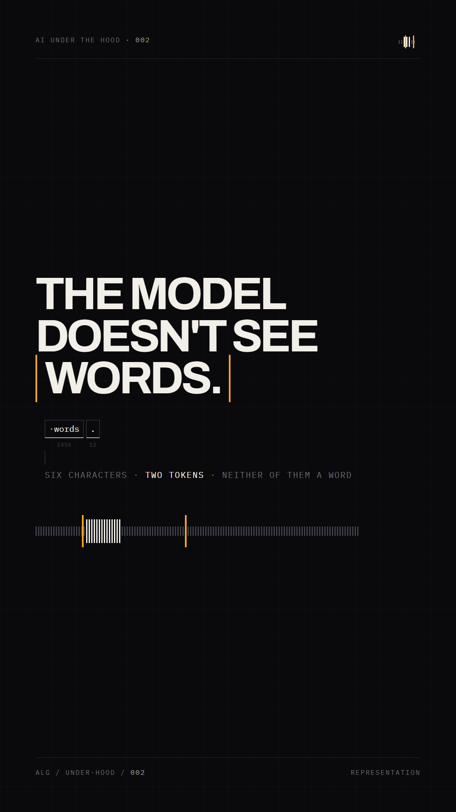

AI UNDER
THE HOOD
This is the system. Not a study, not a set of options — the locked visual specification for an editorial series about what actually happens inside a machine learning system. Every diagram on this sheet is computed from the real rules with a fixed seed. Ratios are never adjusted to make a picture read.
THE CANONICAL LAW
The diagram shows what is computed.
The aperture lives at the boundary of visible computational context and is always sodium. Diagrams never take sodium as a primary data colour. Where a concept depends on information being hidden, masked, excluded or out of view, that content stays represented rather than cropped away.
01 THE SERIES MARK APERTURE TICK-BAND · LOCKED
SPECIFICATION
NEVER: a closed rectangle · a dashed or softened edge · the causal triangle as the series mark · sodium anywhere inside a diagram · an aperture that does not mark something genuinely out of view.
SCALE LADDER · STATIC REDUCTION
PUBLICATION IDENTIFIER · SIBLING, NOT CLONE
It is metadata, not a third logo. It never joins the mark into a combined badge.
02 COLOUR SEMANTICS ONE SIGNATURE · TWO SEMANTICS · TWO NON-COLOURS
LOCKED PALETTE
USAGE DISCIPLINE
Systems at Scale uses amber for degraded / rerouting. Sodium here means aperture / in-view boundary. The two are separated by grammar and usage, not by hue, and that separation is deliberate and sufficient. Lime remains the property of Systems at Scale and never appears in this series.
Cyan was demoted from fill to mark during convergence: filling every negative vector component turned half a vector turquoise and cyan stopped being a semantic. Cyan marks, it never fills.
03 TYPOGRAPHY HIERARCHY ARCHIVO EDITORIAL · IBM PLEX MONO COMPUTATIONAL
The split is a rule, not a preference: if a value came out of a computation it is set in mono. Editorial voice is Archivo and never carries machine output.
04 CANONICAL APPLICATIONS 1080 × 1920 · ALL COMPUTED, SEED 2026·09









IS BEAT A
VECTOR → PROJECTION
IS BEAT B
NEVER ONE FRAME.
05 SMALL SIZE · SURFACES · CROP SURVIVAL AT BOTH EXTREMES
↓
TRUE APERTURE — never widened
↓ fan lines, hairline
MAGNIFIED VIEW — ×N printed
rendering floor it is drawn at 1 px and
says so. The ratio is never adjusted.
THE HOOD
THE HOOD
06 PRIMITIVE INVENTORY FOR THE REMOTION IMPLEMENTATION
| PRIMITIVE | PURPOSE | MOTION VERB |
|---|---|---|
| aperture | boundary of visible context | OPEN · CLOSE · SCAN |
| mark | series identifier, tick band | OPEN |
| band | long sequence at sequence scale | SLIDE |
| seq · tok | tokens, IDs, boundaries | CUT |
| mx · rowsum | attention, weights, causal mask | REDISTRIBUTE |
| plot · hull | latent space, clusters, distance | PROJECT |
| PRIMITIVE | PURPOSE | MOTION VERB |
|---|---|---|
| vfield | signed vector from a centre axis | RESOLVE |
| dist · zoom | ranked candidates, probability | SAMPLE · RESHAPE |
| macro · fan · inset | magnification of an extreme ratio | MAGNIFY |
| stream · join | residual layers, deltas | ADD |
| states | representation forms | CONVERT |
| note · readout | annotation and machine values | SETTLE |
07 DIFFERENTIATION SAME PUBLICATION · DIFFERENT GRAMMAR
| DIMENSION | SYSTEMS AT SCALE | AI UNDER THE HOOD |
|---|---|---|
| Subject | topology · routing · infrastructure · flow · system state | representation · selection · weight · probability · transformation · context |
| Primary object | a graph of machines connected to machines | a field of numbers being reweighted |
| Signature device | fault planes — offset layers with an extension | aperture — two rules bracketing a sequence that continues past them |
| Signature colour | lime · healthy / recovery | sodium · aperture / in-view boundary |
| Amber | degraded / rerouting — a system state | not used as a state; sodium is a boundary, not a condition |
| Type pair | Manrope + DM Mono | Archivo + IBM Plex Mono |
| Motion | traffic moves along a route; a node fails; traffic reroutes | weight redistributes under a constraint; a window slides; a cursor samples |
| Shared on purpose | warm-white ink on near-black · publication identifier in the corner · mono annotation with hairline leaders · one baseline per frame · technical honesty · nothing drawn that the underlying system does not do | |